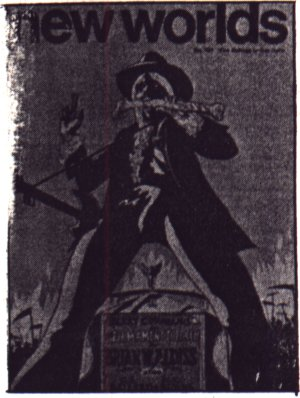

Picocon Pi: Felix Preview

An article advertising Picocon Pi, which appeared in Felix p.11, on 8th March 1985
Picocon
Tomorrow, Saturday 9 March in the Bot Zoo Common Room, IC SF Soc brings you our very own science fiction convention - PICOCON. Starting at 10.00am and continuing to 10.00pm (at least), PICOCON will give you the chance to sample the best in science fiction. There will be a host of video films, two guest speakers, games demonstrations and more.
The Days timetable is:-
10.00am Registration
10.15am Monty Python Live at the Hollywood Bowl
11.45am Charades Game - SFSOC vs ASTROSOC
12.15pm Lunch and Treasure Trap demonstration
1.00pm Star Wars
3.00pm First Speaker Gerry Web
4.00pm Empire Strikes Back
6.00pm Second Speaker - Dave Langford
7.00pm Blade Runner
9.00pm Dreamscape
10.30pm Close of convention
Throughout the convention we will have two computers running games such as the award-winning ELITE by Acornsoft. Refreshments will also be available all day.
Now for a bit of data on our speakers:
Gerry Web is a long standing member of the British Interplanetary Society, a group spearheaded by Arthur C Clarke in the 30's and 40's. Gerry has worked on the Daedalus Project and now runs a firm of space science consultants. He is also a longstanding fan of science fiction.
Dave Langford is also a long time fan of SF, and is now a full time writer. The Critical Mass column in White Dwarf magazine is his most well known face, but he has also written The Space Eater, War in 2080 and The Leaky Establishment, in which he drew on his experiences of work at Aldermarston. Dave's talk last year was so entertaining that we've asked him back for more.
So there it is PICOCON PI, 12 hours of science fiction experiences all for only £2.50. What more could you ask for?
Science Fiction
The Imperial Stormtroopers were closing in, their blaster fire getting closer to the base. It was time to leave. Han Solo lifted his gun and shouted, "Move it out". The Rebel group leapt from cover and raked the oncoming troops with fire. Han's gun spat deadly laser bolts. He hit two troopers full in the chest and they went down. Two nearby Rebels were split asunder by the heavy callibre fire of the Imperials. It was time to get out of there.'.
That is how many people encounter science fiction, in the form of the special effects extravaganzas of the cinema. Recent films like the Star Wars trilogy, Buck Rogers and television shows like Dr Who and Space 1999 are indeed what most people think science fiction is all about - flashy hardware, cardboard characters, thin plots but lots of mindless simplistic action to make up for it. Oh, and superb, expensive special effects. Most SF films and TV series are in fact like this, and all of them are pretty crap.
The home of science fiction, however, is not the screen but the printed page, and the screen version of SF, despite a few notable exceptions, lags about 50 years behind the books.
Science fiction first came into its own in the magazines of the twenties and thirties with such titles as Amazing Science Fiction. These featured mainly the whizz-bang-zap kind of science fiction common in today's cinema. - This was neither scientific nor particularly good fiction, but did introduce a lot of people to the idea of setting stories in either the future, or alternative worlds. Three noted, and possibly infamous, stars of this period were E E 'Doc' Smith, Robert E Howard and L Ron Hubbard. Smith's horrifyingly awful Skylark and Lensman series are still staple fodder for many young SF fans, all of whom later complain how bad his stories are. Howard too will never be forgotten, nor forgiven, for his creation Conan the Barbarian, who has recently stepped in to the cinema in some pretty dire films. Hubbard though went from writing awful science fiction to founding the pretty awful religion of Scientology. He then died and is now more or less forgotton (thank God!).
However during this period, known to many SF fans as the Golden Age, some authors started to use science fiction in a more grown up way. Two distinct schools grew up, which have now become respectively known as hard and soft science fiction.
The first of these to arise was hard SF. Its founding fathers were Isaac Asimov, Robert Heinlein and to a lesser extent, Arthur C Clarke. The basic idea behind hard science fiction is science. The hard authors usually take a few interesting scientific ideas, like machines that think or black holes, and see where this takes them. The usual source of ideas for hard SF is hard science, like physics or astronomy. In this sort of work, the people in the stories are usually secondary to the ideas, and so characterisations are sometimes rather wooden. Hard science fiction writers are often scientists themselves. Robert Forward, a physicist at Bell Labs, in fact published a paper on a device he worked out for use in his books Dragon's Egg. Hard science fiction ruled supreme throughout the late 40's and 50's with such classics as Asimov's Foundation trilogy and Heinlein's Starship Troopers.
With the 60's however, change come in the form of the English authors Brian Aldiss, J G Ballard and Michael Moorcock. They came from a literary rather than a scientific background, and concentrated on the more human aspects of the world. Where science was involved at all it was generally ecology or psychology. The advent of these, and other, authors created soft science fiction, more usually termed New Wave. The spearhead of the New Wave in the late 60's was the magazine New Worlds, edited by Michael Moorcock. This and the whole of the New Wave was dominated by the attitudes of the hippy culture of the time, and concentrated on such themes as mind-changing drugs, anti-war protests, eastern religions and ecology. Most of the New Wave soft SF is set in the near future as opposed to the vast time scales frequently involved in hard SF. The New Wave also served to vastly increase the literary quality of science fiction, and encouraged experimentation in style. Occasional disasters came as a result of this, such as the nearly unreadable Barefoot In The Head by Brian Aldiss. However, this experimentation also lead to the breakdown of the barriers between hard and soft SF and between SF and the rest of mainstream fiction. As a result of this certain of the New Wave authors are now among the most acclaimed of modern writers. Indeed J G Ballard nearly won last year's Booker prize.
In the two decades since the New Wave, science fiction has settled down again, with the soft and hard merging into a homogenous whole. It may be that the time is ripe for a new revolution in style, since many authors have taken to rehashing old ideas in the form of long, immensely tedious series. Frank Herbert, who first added hard and soft SF to get the fabulous Dune, has fallen foul of this sequel disease. The sixth Dune book has just been published and a seventh is on its way. The signs are bright though, with new authors such as Bill Gibson (in his book Neuromancer) returning to the originality that distinguishes the best in science fiction.